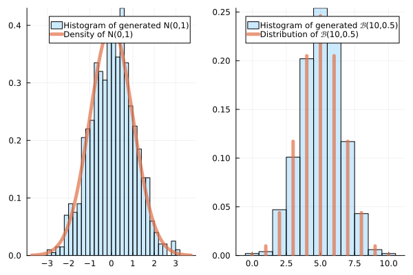

Binomial distribution
Multinomial distribution
\chi^2 Goodness of Fit Test (Adéquation)
| Color | Observed Counts |
|---|---|
| Red | X_1=50 |
| Green | X_2=30 |
| Yellow | X_3=20 |
| Expected Counts |
|---|
| n_1=40 |
| n_2=35 |
| n_3=25 |
histogram
Normalization
Can be normalized in counts (default), frequency, or density (area under the curve = 1)
Law of Large Number, Monte Carlo (Informal)

Reduction to Chi-Squared Statistic Test
Corrected \chi^2 Test
H_0: X_i iid \mathcal P(2)
| 0 | 1 | 2 | \geq 3 | Total | |
|---|---|---|---|---|---|
| Counts | 16 | 8 | 3 | 3 | 30 |
| Theoretical Counts | 4.06 | 8.1 | 8.1 | 9.7 |
(1-cdf(Poisson(2),2))*30(1-cdf(Chisq(3),36)) is very small: RejectWarning
(1-cdf(Chisq(2),36)) is even smaller: (Still Reject)QQ-Plot
Kolmogorov-Smirnov Test